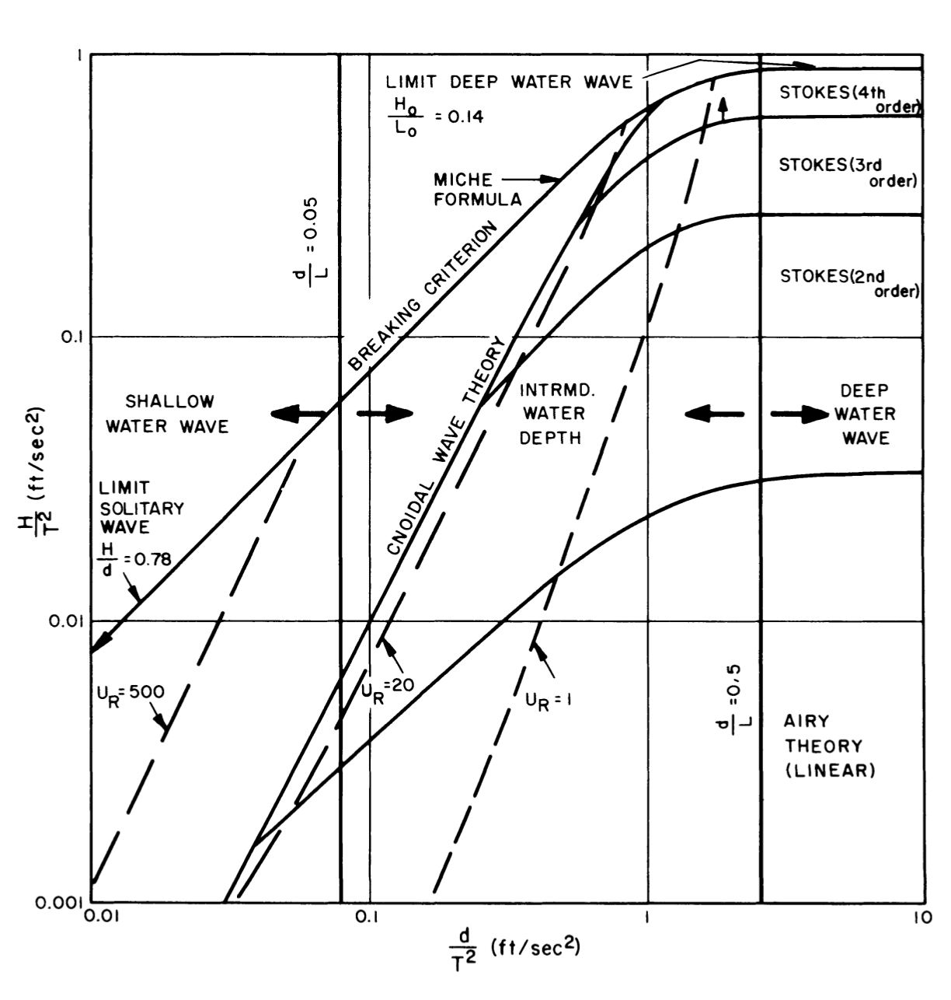
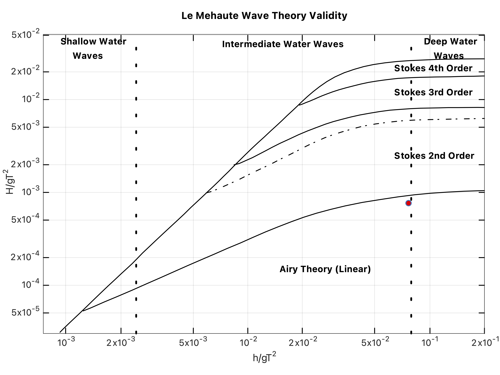

Water Waves
Table of Contents
1. Limits of Wave Theories (Matlab Code)
1.1. Graph proposed by Le Méhauté
Fig. 1 shows the graph proposed by Le Méhauté indicating the validity of various wave theories.

Figure 1: Limits of validity for various wave theories (Le Méhauté, B., 2013. An introduction to hydrodynamics and water waves. Springer Science & Business Media, p. 205).
1.2. Matlab code
1.2.1. Source
Brooklynn Byford (2023). Non-Linear Wave Solver Function (https://www.mathworks.com/matlabcentral/fileexchange/67106-non-linear-wave-solver-function), MATLAB Central File Exchange. Retrieved February 23, 2023.
1.2.2. Brief introduction of the code
The source code and the corresponding data files can be downloaded here.
Brief introduction of the code NonLinearWaveSolver.m:
%%Non-Linear Wave Solver Function %%Brooklynn Byford %%Applied Marine Hydrodynamics %%%%%%%%%%%%%%%%%%%%%%%%%%%%%%%%%%%%%%%%%%%%%%%%%%%%%%%%%%%%%%%%%%%%%%%%%%% %This function is designed to receive inputs that are plotted on a graph %that indicates the validity of wave theories as originally created by Le %Mehaute (1976). Wave height, wave period, and water depth are entered as %inputs that are calculated for a point having the x-axis equal (Water %Depth/Wave Period^2) and the y-axis equal (Wave Height/Wave Period^2). The %data points of the graph were taken from the Le Mehaute image that is %included in the folder using the following image digitizer: %https://automeris.io/WebPlotDigitizer/. The resulting plot is best viewed %in full screen. %DISCLAIMER: Function performs successfully on R2016a,b and R2017a,b. %Function has not been tested on any other MATLAB versions. %%%%%%%%%%%%%%%%%%%%%%%%%%%%%%%%%%%%%%%%%%%%%%%%%%%%%%%%%%%%%%%%%%%%%%%%%%% function[graph,xpoint,ypoint]= NonLinearWaveSolver(height,period,depth)
1.2.3. Notes
- The original code is with BG units, and has been modified into SI units.
- In Octave, the code needs additional data smoothing function:
smooth.m(included in the zip file.) The inputs of the function are
height: wave heightperiod: wave perioddepth: wave depth
Outputs are
graph: the graphxpoint: the x-coordinate of the input wave condition: \(h/gT^{2}\)ypoint: the y-coordinate of the input wave condition: \(H/gT^{2}\)
1.2.4. Result

Figure 2: Limits of validity for various wave theories.